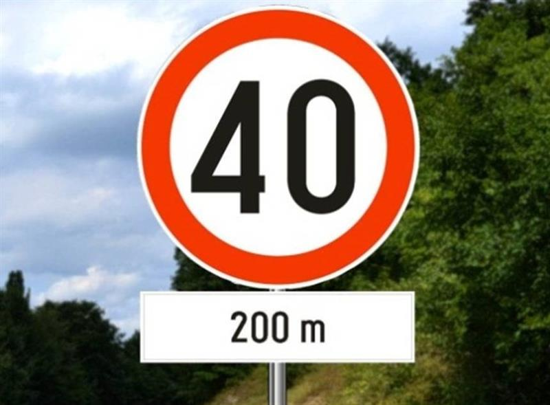
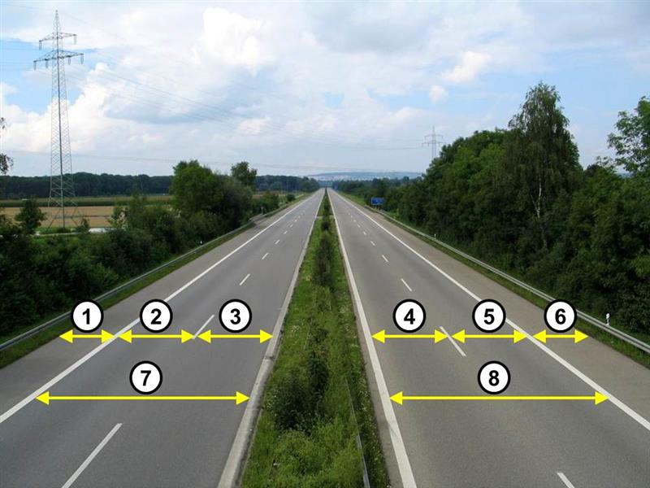
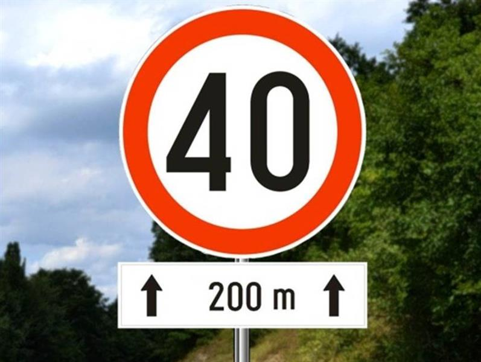

Типы дорог, пределы скорости, зоны и автомагистраль.
Put — дорога; kolovoz — проезжая часть; kolovozna traka — часть одного направления; saobraćajna traka — отдельная полоса одной колонны. Zaustavna traka — аварийная полоса, не для отдыха. Traka za uključivanje / isključivanje — въезд / съезд.
| Общие пределы, км/ч |
Обычные / пробные права |
| Autoput |
130 / 110 |
| Motoput |
100 / 90 |
| Прочие van naselja |
80 / 72 |
| U naselju |
50 / 45 |
Это общие пределы; считывай знак и условия. Пробные права: 90% на остальных дорогах, не 90% от 130. Банк 9881 показывает в населённом пункте знак 80: предел там 80, безопасность по погоде всё равно обязательна.
Autoput по лекции: разделены направления, ≥2 полос движения + 1 аварийная на направление, нет пересечений в одном уровне, контролируемый доступ, соответствующие знаки и разрешённые виды транспорта. Названная конструктивная способность >50 км/ч не означает обязанность держать 50 в заторе.
Pešačka zona — при разрешённом въезде скорость пешехода; zona usporenog saobraćaja — скорость пешехода, ≤10 км/ч; zona 30 ≤30. Школьные часы уточнены по банку ниже.
Biciklistička traka / staza — полоса / дорожка; в лекции примеры ширины 1 / 1,2 м. При поломке на автомагистрали: аварийные огни, жилет, треугольник 100 м позади по лекции, помощь на дороге. Подробности и сомнения — в конспекте.
Проверь себя
B · 10606
2 балл(а) · правильных ответов: 1
Brzina kretanјa vozila u naselјu, na delu puta ili ulice u neposrednoj blizini škole („Zona škole“), je ograničena do:
- 30 km/h, u vremenu od 7,00 do 21,00 sat, osim ako saobraćajnim znakom vreme zabrane nije drugačije određeno
- 50 km/h, u vremenu od 7,00 do 21,00 sat, osim ako saobraćajnim znakom vreme zabrane nije drugačije određeno
- 20 km/h, radnim danima u vremenu od 7,00 do 21,00 sat
Перевод вопроса
Какой предел у школы в населённом пункте?
Ответ и ловушка
Правильный ответ: 1.
По-русски: 30 км/ч с 07:00 до 21:00, если знак не определяет время иначе.
Школьная зона: часы тоже часть ответа
Ловушка: В правильном варианте нет ограничения только рабочими днями. Не терять время действия и исключение по знаку.
Слова в вопросе: u naselju; od 7,00 do 21,00; osim ako.
B · 9010
3 балл(а) · правильных ответов: 1
Izričita naredba data saobraćajnim znakom na slici važi:

- na udalјenosti od 200 m od mesta na kome je postavlјen taj znak
- od mesta na kome je postavlјen taj znak u dužini od 200 m
- od mesta na kome je postavlјen taj znak
Перевод вопроса
Где начинает действовать предписание знака с табличкой 200 m без стрелок?
Ответ и ловушка
Правильный ответ: 1.
По-русски: Через 200 м от места установки знака.
200 m без стрелок — до начала ограничения
Ловушка: Это расстояние до начала действия, а не длина участка. Сравни с 9011: добавление стрелок меняет смысл при том же числе.
Слова в вопросе: na udaljenosti od 200 m.
Экзаменационный ориентир
К скоростям школьной зоны банк добавляет время 07:00–21:00, если знак не задаёт иначе: 30 в населённом пункте / 50 вне (10606, 10607). Различай тип полосы и таблички: одно число 200 м со стрелками и без них даёт разные ответы (9010, 9011).
Определения и различия
| Сербский термин |
Русский смысл по объяснению лектора |
| Put |
Дорога: построенная или укреплённая поверхность, которой пользуются все или те, кому это разрешено законом |
| Kolovoz |
Проезжая часть, предназначенная для движения транспортных средств |
| Kolovozna traka |
Часть проезжей части для движения в одном направлении; может включать несколько отдельных полос |
| Saobraćajna traka |
Полоса для движения одной колонны транспортных средств в одном направлении |
| Trotoar / pešačka staza |
Тротуар / пешеходная дорожка |
| Serpentina |
Большой изгиб горной дороги для набора или потери высоты |
| Traka za uključivanje / isključivanje |
Полоса въезда / съезда |
Источники: 4 · 00:01:02, 4 · 00:01:34, 4 · 00:03:03, 4 · 00:04:29.
На тесте особенно важно не путать kolovozna traka и saobraćajna traka: первое относится к направлению движения, второе — к одной полосе внутри него. На показанном примере указатель серпантина сообщает номер 8 и высоту 984 м; это пример изображения, не общий параметр серпантинов.
Велосипедные пути
- Biciklistička traka — размеченная полоса вдоль проезжей части, по лекции шириной 1 м, отделённая сплошной. Лектор относит к ней велосипеды, мопеды и лёгкие трициклы со скоростью до 45 км/ч.
- Biciklistička staza — отдельная велосипедная дорожка с синим знаком; только для велосипедов, в примере ширина 1,2 м. Может идти рядом с дорогой или отдельно.
Источник: 4 · 00:05:15.
Вне населённого пункта при отсутствии отдельных путей велосипедист держится правого края проезжей части, пешеход — левой стороны, навстречу видимому потоку. Лектор напоминает про белое освещение велосипеда спереди, красное сзади и заметную одежду пешехода ночью. 4 · 00:07:13.
Типы дорог и скорость
| Дорога |
Обычный предел в лекции |
Для пробных прав |
| Autoput — автомагистраль |
130 км/ч |
110 км/ч |
| Motoput — дорога для моторного транспорта |
100 км/ч |
90 км/ч |
| Van naselja, прочая дорога вне населённого пункта |
80 км/ч |
72 км/ч |
| U naselju, в населённом пункте |
50 км/ч |
45 км/ч |
Источник: 4 · 00:14:04. Это названные общие пределы; дорожные знаки и обстановка могут требовать меньшей скорости. Для пробных прав на автомагистрали лектор отдельно называет 110, а не результат умножения 130 на 90%.
Лектор описывает автомагистраль через 6 условий:
- Начало и конец обозначены соответствующими знаками, на слайде зелёного цвета.
- Направления движения физически разделены; он описывает зелёную разделительную полосу.
- Нет пересечений с другими дорогами в одном уровне: надземные/подземные пересечения.
- Доступ контролируется, въезд и съезд только через предназначенные пути.
- Не менее 2 полос движения и 1 аварийной полосы в каждом направлении.
- Допускаются только названные категории моторных средств: мотоциклы, легковые, грузовые автомобили и автобусы, с прицепом или без; лектор связывает допуск со способностью ехать свыше 50 км/ч.
Источник: 4 · 00:09:55. Пешеходы, велосипеды, мотокультиваторы, гужевые средства, тракторы, рабочие машины и лёгкие трициклы/квадрициклы в перечисленный допуск не входят. Не переносить фразу про 50 км/ч автоматически на обязанность держать такую скорость при заторе или опасности: в записи допуск и «минимальная скорость» объяснены не вполне раздельно. 4 · 00:01:49.
Аварийная полоса
Zaustavna traka — полоса для вынужденной остановки неисправного автомобиля. По ней нельзя ехать или останавливаться ради отдыха, еды, ухода за ребёнком. При поломке лектор перечисляет: аварийная сигнализация, красный треугольник 100 м позади, вызов pomoć na putu — помощи на дороге. 4 · 00:11:30, 4 · 00:12:31.
Обычная остановка — на заправке или специально устроенной площадке отдыха. Лектор приводит 30 км как ориентир расстояния между заправками, а пример участка в 50 км — как объяснение устройства отдельной зоны отдыха. 4 · 00:13:23.
За движение по аварийной полосе в ASR названы 15 дней заключения / 120 000 динаров, 14 баллов, 1 год запрета. Союз между заключением и штрафом, а также условия санкции требуют проверки; это не таблица проверенного действующего законодательства. 4 · 00:12:54.
Специальные зоны
| Сербский |
Смысл и скорость по лекции |
| Pešačka zona |
Пешеходная зона; для въезда автомобиля нужна письменная разрешительная процедура. Разрешённый автомобиль движется со скоростью пешехода — пример 2–3 км/ч; лектор запрещает остановку и стоянку внутри зоны |
| Zona usporenog saobraćaja |
Зона совместного движения людей и транспорта: пешеходный темп, не быстрее 10 км/ч |
| Zona 30 |
Максимум 30 км/ч |
| Zona škole |
Зона школы: в населённом пункте 30 км/ч, вне населённого 50 км/ч. Последнее число восстановлено повторным ASR из фрагмента 00:23:08 |
Источник: 4 · 00:15:18, 4 · 00:17:01, 4 · 00:17:52, 4 · 00:20:14, 4 · 00:22:37, повторный ASR зон.
Usporivač saobraćaja — искусственная неровность, разговорно ležeći policajac. На экзамене полезно знать официальный термин. Лектор различает широкие резиновые, бетонные и узкие высокие металлические конструкции; скорость выбирать по знакам и самой неровности, а не переносить его пример «по некоторым можно 50» на любые препятствия. 4 · 00:18:45.
В зоне школы лектор приводит несдачу экзамена за 31 км/ч при разрешённых 30: не торопиться и считывать знак до въезда в зону. 4 · 00:21:38.
Разметка и неуверенные санкции
Двойную сплошную — dupla puna linija — лектор трактует как границу, через которую нельзя выезжать навстречу потоку. Повторный ASR различает одинарную сплошную — 20 000 динаров / 6 баллов / 3 месяца запрета, двойную — не менее 60 000 / 9 / 9 месяцев; первая сумма слита в распознавании со следующим числом, поэтому требует уточнения. За въезд без разрешения в пешеходную зону названо не менее 30 000 / 6 / 3 месяца. Это санкции из объяснения лектора с неполным описанием условий. 4 · 00:06:21, 4 · 00:16:49, повторный ASR.
Слово magistrala лектор называет разговорным, отсутствующим в обсуждаемой им классификации закона; на тесте выбирать официальное название типа дороги. 4 · 00:15:02.
Продолжение в новых лекциях
Лекция 7 различает название территории населённого места и naselje как начало режима населённого пункта; повторяет действие zone 30 до знака конца зоны, а не только до перекрёстка. Таблички со стрелками, назначение полос и дорожные указатели разобраны в знаках; линии и реверсивные полосы — в разметке. 7 · фр. 19–25.
Автомагистраль: въезд, затор и поломка
Пределы скорости из таблицы выше повторены в записи 12. «Минимальные 50» в речи преподавателя нельзя учить как обязанность всегда ехать не медленнее 50: банк 10561 проверяет допуск по наибольшей конструктивной скорости и категории транспорта. Рабочая машина не получает допуск только потому, что развивает достаточную скорость. Motoput не обязательно только подъезд к платной автомагистрали, как упрощённо описывает лектор. 12 · 00:20:27, 12 · 00:22:38.
Traka za uključivanje / isključivanje — полоса въезда / съезда. На въезде проверить поток слева, уступить движущимся по автомагистрали и использовать полосу для набора подходящей скорости; поворотник не даёт приоритета. В пробке левые смещаются влево, правые вправо, освобождая проход спецтранспорту между рядами. Номера траекторий на отсутствующем слайде не восстановлены. 12 · 00:23:27, 12 · 00:24:20.
Останавливаться и парковаться можно только на специально оборудованных и обозначенных местах. Zaustavna traka, аварийная полоса, не место отдыха. При вынужденной остановке неисправной машины убрать её туда, включить аварийку, обозначить и организовать скорейшее удаление; лектор повторяет 100 м до треугольника. 12 · 00:25:04, 12 · 00:25:40.
Разворот и задний ход запрещены и на autoput, и на motoput: пропущенный съезд — ехать к следующему. Буксировка неисправной машины разрешена как исключение, если она сломалась во время движения по этой дороге, и только до первого съезда. Названные санкции 30 000–60 000 / 9 баллов / полгода остаются словами лектора, отдельно не проверены. 12 · 00:26:10, 12 · 00:26:48.
Проверь себя
Вопросы банка B по теме. Сначала реши сам, затем открой перевод или разбор.
B · 8092
2 балл(а) · правильных ответов: 2
Saobraćajne trake, na autoputu, su na slici označene brojevima:

- 1 i 3
- 4 i 5
- 7 i 8
- 2 i 3
- 4, 5 i 6
Перевод вопроса
Какие номера на схеме автомагистрали обозначают saobraćajne trake?
Ответ и ловушка
Правильные ответы: 2, 4.
По-русски: Два варианта: 2 и 3; 4 и 5.
Полосы движения и аварийная полоса
Ловушка: Kolovozna traka — проезжая часть одного направления; saobraćajna traka — отдельная полоса. Аварийная zaustavna traka не входит в выбранные полосы движения.
Слова в вопросе: saobraćajna traka; kolovozna traka; zaustavna traka.
B · 10606
2 балл(а) · правильных ответов: 1
Brzina kretanјa vozila u naselјu, na delu puta ili ulice u neposrednoj blizini škole („Zona škole“), je ograničena do:
- 30 km/h, u vremenu od 7,00 do 21,00 sat, osim ako saobraćajnim znakom vreme zabrane nije drugačije određeno
- 50 km/h, u vremenu od 7,00 do 21,00 sat, osim ako saobraćajnim znakom vreme zabrane nije drugačije određeno
- 20 km/h, radnim danima u vremenu od 7,00 do 21,00 sat
Перевод вопроса
Какой предел у школы в населённом пункте?
Ответ и ловушка
Правильный ответ: 1.
По-русски: 30 км/ч с 07:00 до 21:00, если знак не определяет время иначе.
Школьная зона: часы тоже часть ответа
Ловушка: В правильном варианте нет ограничения только рабочими днями. Не терять время действия и исключение по знаку.
Слова в вопросе: u naselju; od 7,00 do 21,00; osim ako.
B · 10607
2 балл(а) · правильных ответов: 1
Brzina kretanјa vozila van naselјa, na delu puta ili ulice u neposrednoj blizini škole („Zona škole“), je ograničena do:
- 50 km/h, u vremenu od 7,00 do 21,00 sat, osim ako saobraćajnim znakom vreme zabrane nije drugačije određeno
- 20 km/h, radnim danima u vremenu od 7,00 do 21,00 sat, osim ako saobraćajnim znakom vreme zabrane nije drugačije određeno
- 30 km/h, u vremenu od 7,00 do 21,00 sat
Перевод вопроса
Какой предел у школы вне населённого пункта?
Ответ и ловушка
Правильный ответ: 1.
По-русски: 50 км/ч с 07:00 до 21:00, если знак не определяет время иначе.
Школа вне населённого пункта
Ловушка: Внешне похожая школьная зона не делает предел 30 универсальным для любой дороги. Важно van naselja.
Слова в вопросе: van naselja; 50 km/h.
B · 9010
3 балл(а) · правильных ответов: 1
Izričita naredba data saobraćajnim znakom na slici važi:
- na udalјenosti od 200 m od mesta na kome je postavlјen taj znak
- od mesta na kome je postavlјen taj znak u dužini od 200 m
- od mesta na kome je postavlјen taj znak
Перевод вопроса
Где начинает действовать предписание знака с табличкой 200 m без стрелок?
Ответ и ловушка
Правильный ответ: 1.
По-русски: Через 200 м от места установки знака.
200 m без стрелок — до начала ограничения
Ловушка: Это расстояние до начала действия, а не длина участка. Сравни с 9011: добавление стрелок меняет смысл при том же числе.
Слова в вопросе: na udaljenosti od 200 m.
B · 9011
3 балл(а) · правильных ответов: 1
Izričita naredba data saobraćajnim znakom na slici važi:

- na udalјenosti od 200 m od mesta na kome je postavlјen taj znak
- od mesta na kome je postavlјen taj znak
- od mesta na kome je postavlјen taj znak u dužini od 200 m
Перевод вопроса
Где действует знак с табличкой 200 m и стрелками вверх по краям?
Ответ и ловушка
Правильный ответ: 3.
По-русски: От места установки на протяжении 200 м.
200 m со стрелками — длина участка
Ловушка: Число то же, что в 9010, но стрелки задают протяжённость. Не начинать отсчёт действия через 200 м.
Слова в вопросе: od mesta ... u dužini od 200 m.